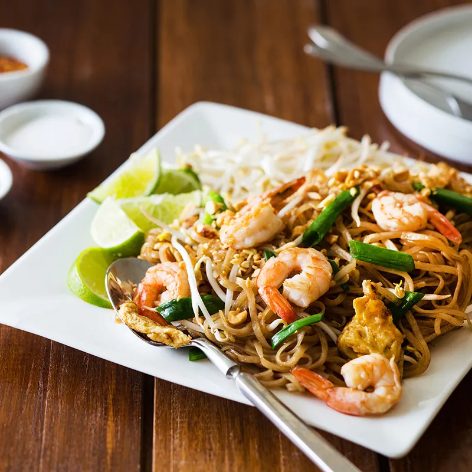

Pad Thai

Description
Pad Thai is a Thai noodle stir fry with a sweet-savoury-sour sauce.
Often served with chicken, seafood, or tofu with peanuts, and a scarmbled
egg. It's one of the most popular menu items at Thai restaurants.
Ingredients (for two)
- 125g Pad Thai dried rice sticks
- 2 tablespoon of oyster sauce
- 1 tablespoon of fish sauce
- 1 1/2 tablespoon of brown sugar
- 1 squeezed lemon
- 1/2 onion, sliced
- 2 tablespoon of crushed garlic
- 2 eggs
- 6 prawns
- 1/2 cup finely chopped peanuts
- 1/2 cup firm tofu
- lime wedges, vegetable oil
Steps
- Pace noodles in a large bowl, poor lukewarm water until soft
- Mix sauce above in a small bowl
- Heat 2 tablespoon of vegetable oil in a large pan over high heat
- Add garlic and onion, cook for 30 seconds.
- Add prawns and cook for 90 seconds until mostly cooked.
- Poor eggs on one side, and scramble.
- Add tofu, noodles, then sauce
- Toss gently for about 2 minutes until sauce is well absorbed.
- Serve immediately, sprinkle some peanuts and lime wedges